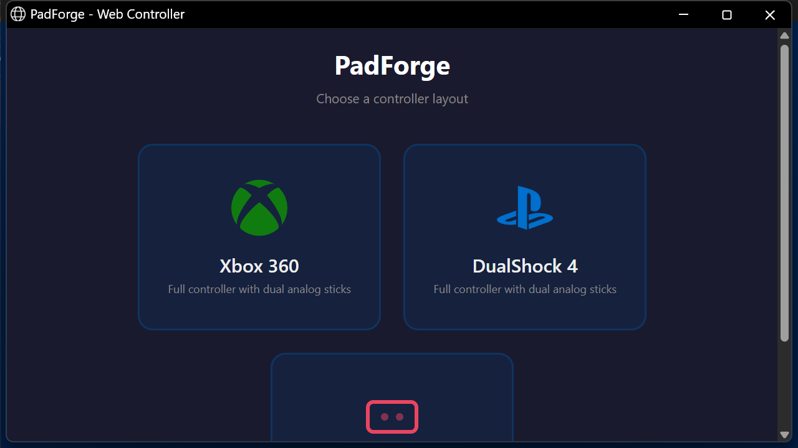
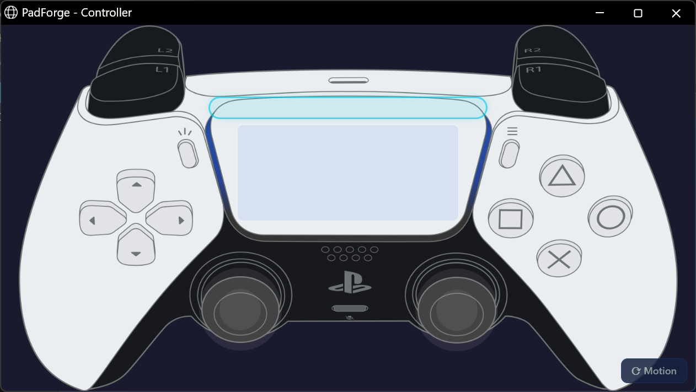
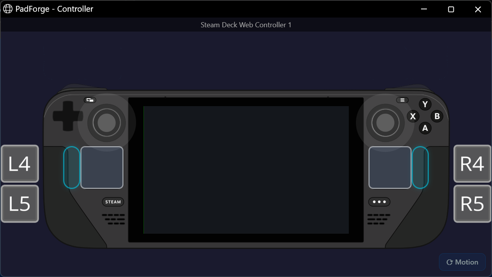
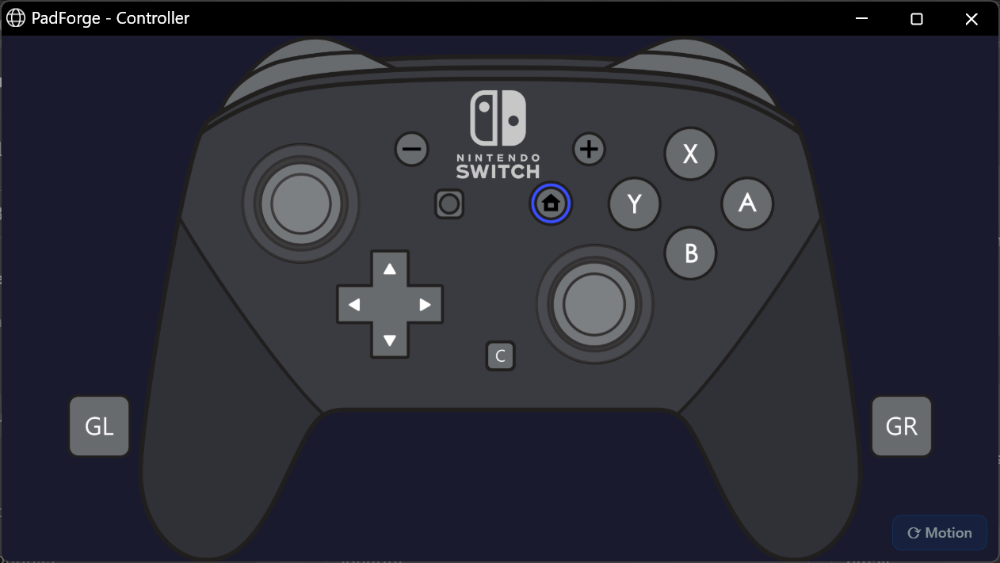
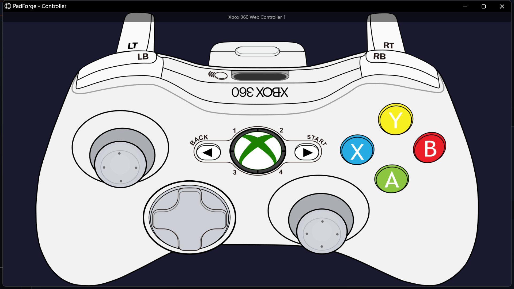
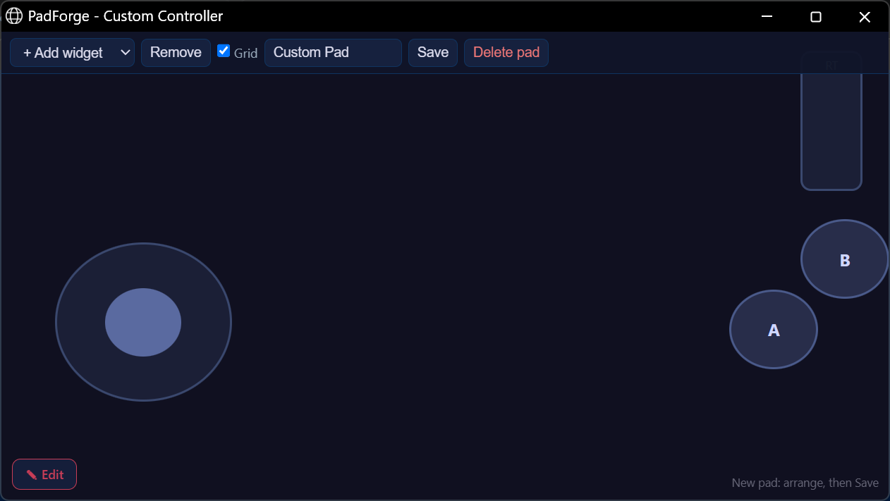

Web Controller¶
Any device with a web browser becomes a game controller for your PC.
Open the URL PadForge shows on the Dashboard from a phone, tablet, or another networked device. The tab shows up on the Devices page as a real input device, ready to assign to any slot.
Useful for an extra controller, a phone as a second pad, or touchscreen play on a tablet.

Setup¶
1. Turn on the server¶
- On the Dashboard, check Enable Web Controller Server in the Web Controller section.
- PadForge shows a URL (e.g.,
https://192.168.1.100:8080, orhttp://when the certificate binding fails). - The Dashboard shows the server status and how many browser tabs are connected.
2. Open the URL on your phone¶
- On the phone, tablet, or other device, open any web browser.
- Go to the URL PadForge shows.
- The landing page loads with the layout choices.
3. Pick a layout¶
Tap one of the twelve cards. Ten are gamepad layouts, one is the bare Touchpad surface, and Build Your Own opens the builder.
- Every gamepad layout uses the same 2D controller art the desktop app shows. Tap a trigger and its fill snaps to full.
- Layouts with a touchpad add a drag surface on the controller art, with its own click pill beside it.
- Touchpad is a multi-touch surface that drives the DS4 touchpad on whichever PlayStation slot it is assigned to.
4. Assign the controller to a slot¶
- The browser controller shows up on the Devices page named for the layout you picked: Xbox 360 Web Controller 1, DualShock 4 Web Controller 1, or Web Touchpad 1 (each layout numbers its own devices starting at 1).
- Click the slot badge on the device card to assign it. Same as any physical controller.
- Done. Start playing.
Tip: Use your browser's "Add to Home Screen" option for fullscreen mode without the address bar.
Network requirements¶
The web controller is built into PadForge. Nothing extra to install. The phone or tablet and the PC must be on the same local network (the same Wi-Fi, usually).
| Requirement | Details |
|---|---|
| Port | TCP 8080 (default), settable on the Dashboard |
| Firewall | PadForge adds a "PadForge Web Controller" inbound rule when the server starts, if one is not already there. Third-party firewalls may need a manual TCP 8080 allow rule. |
| Max clients | 16 browser tabs at once |
Can't reach the URL?
- Confirm both devices share the same Wi-Fi network
- Confirm the firewall allows port 8080
- Try a different port if 8080 is already in use
Stopping PadForge stops the server.
Controller layouts¶
Every layout draws the same 2D controller art the desktop app shows. Tap a trigger and its fill snaps straight to full. Keep the finger down and drag it downward to feather the pull, and slide back up for full again.
| Layout | What it adds |
|---|---|
| Xbox 360 | Classic layout, dual analog sticks |
| Xbox One | Xbox One S layout |
| Xbox Series X|S | Share button, hybrid D-pad |
| DualShock 4 | Touchpad and lightbar |
| DualSense | PS5 layout with mute button |
| DualSense Edge | Fn buttons and back paddles |
| Switch Pro | Nintendo layout with Capture |
| Switch 2 Pro | C button and back paddles |
| Steam Deck | Dual trackpads and four grips |
| Steam Controller | Dual trackpads and paddles |
| Touchpad | Multi-touch surface only |
| Build Your Own | Drag widgets onto a blank pad |
Switch layouts at any time by going back to the landing page.
Finishes¶
Xbox Series X|S, DualShock 4, and DualSense carry a row of color swatches on their card. Tap a swatch instead of the card and the layout opens with the art drawn in that finish.
Lights, on the page¶
The layouts whose hardware has lighting draw it on the controller itself, where the real one is.
| Layout | What lights up |
|---|---|
| DualShock 4 | The lightbar, front strip and rear glow both |
| DualSense, DualSense Edge | The lightbar around the touchpad, plus the player indicator row beneath it |
| Everything else | Nothing. An Xbox pad and a Switch Pro have no lightbar, so none is drawn |
Both follow whatever the slot is doing, so a game that drives the lightbar drives it here too, and the indicator row lights the same symmetric pattern a DualSense shows: one LED in the middle for player one, the outer pair for player two, outward from there.
A web DualShock 4 or DualSense is configurable from the Lighting tab exactly like a physical one. Pick a color, a mode, or an animation and the phone shows it. Animated modes run the same engine the hardware pads use rather than a still approximation of it.

Trackpads and grips¶
The Steam Deck carries both trackpads as real touch surfaces, plus its four rear grip buttons as tiles at the outer edges of the shell.
The 2015 Steam Controller is different, because that is how SDL maps the real hardware. Its left pad is an 8-way D-pad surface, its right pad is the right stick, and it has one physical thumbstick (the left one) plus two rear grips. The two pad-click zones are suppressed on glass, since they would sit on top of the surfaces and steal every touch.

Nintendo layouts¶
The Switch Pro layout carries the Capture button, and the Switch 2 Pro adds the C button and its two back paddles.

Touchpad¶
A multi-touch surface that maps straight to the DualShock 4 / DualSense touchpad on the assigned PlayStation slot. Use it as a second input device when a phone or tablet is already in another player's hands and the DS4 / DS5 touchpad is the missing piece. No buttons or sticks, touchpad input only.
The same surface also drives every Touchpad-tab feature on the slot it's assigned to:
- Mouse Output: relative cursor control. The Response row's Trackpad mode slows fine positioning and speeds up fast drags, an acceleration curve ported from libinput.
- Absolute Pointer: the Touchpad Pointer sources warp the cursor to where your finger sits on the pad.
- Stick / D-Pad Output: a virtual analog stick or D-pad.
- The gesture stack: swipes, taps, shapes, and the rest.
Each slot the phone is assigned to carries its own toggles and tuning.

Build your own layout¶
The Build Your Own card opens a builder that starts from a blank pad. Tap Edit to bring up the toolbar, add widgets (buttons, sticks, trigger sliders, a D-pad, a touch area), drag them where your thumbs actually sit, name the pad, and save. A pad holds up to 64 widgets.
Saved pads live in PadForge's own settings file beside the executable, machine-wide rather than inside a profile, and each one gets its own card on the landing page next to the stock layouts. A saved pad shows up on the Devices page under its own name, and its shape follows its widgets: a pad built from two buttons and a stick offers exactly that in the mapping picker.

Phone motion¶
The page can read the phone's own gyroscope and accelerometer and stream them to the slot as motion, so tilting the handset aims.
Browsers only hand out sensor readings over a secure connection. PadForge binds a self-signed certificate and serves the controller over HTTPS whenever that binding succeeds, which needs PadForge running elevated. If the binding fails it falls back to plain HTTP, and everything except the phone sensors still works.
Because the certificate is self-signed, the phone shows a one-time warning the first time it connects. Accept it and the connection is remembered.
Motion is off until you ask for it. When the page is served over HTTPS and the browser exposes the sensors, a Motion button appears in the bottom right corner of any gamepad layout. Tap it to start streaming and tap it again to stop. On iOS the same tap is what triggers Safari's sensor permission prompt, so the button is required there, not optional. The Touchpad page has no motion button.
A QR code on the Dashboard's Web Controller card gets the phone to the right address without anyone typing it.
Touch controls¶
| Control | Behavior |
|---|---|
| Buttons | Tap to press. Touch zones are larger than the visible art for easier targeting on small screens. |
| Analog sticks | Drag inside the stick zone to move. Release to re-center. Stick click (L3 / R3): tap and release within 200 ms with little movement. |
| D-pad | Touch and drag toward a direction. All 8 directions (cardinal and diagonal). |
| Triggers | Tap to send a full press. Hold and drag down to feather the pull, back up for full. Release to return to zero. |
Connection and latency¶
The web controller stays connected for instant input. Updates send the moment you touch the screen.
| Status | Meaning |
|---|---|
| Connected | Active connection. Input reaches PadForge. |
| Disconnected | Connection lost. Tap to reconnect. |
Latency: expect 5-15 ms more than a wired controller over home Wi-Fi. Fine for casual, puzzle, and platform games. Fast competitive play may feel a touch less responsive.
Reconnection: each browser tab keeps a persistent pad ID. A brief disconnect (phone screen lock) does not change the device identity or slot assignment. No reassignment needed.
Rumble feedback¶
PadForge forwards vibration to the browser, which uses your device's built-in vibration support. Works on phones and tablets with vibration motors. Chrome on Android handles it well. Safari on iOS does not.
The one-time refresh¶
Tap a gamepad layout and the page refreshes once before the controller appears. That happens on any browser, and it is expected. The controller works normally after it.
The refresh works around an iOS Safari bug. On iOS, the connection fails on the first load when the page is reached by tapping a link, and a reload clears it. Chrome, Firefox, Edge, and Chrome on Android do not have that bug, but they still do the single refresh. The builder does not do it at all. The Touchpad page does the same single refresh.
Requirements summary¶
| Requirement | Details |
|---|---|
| Network | PC and device on the same local network (Wi-Fi) |
| Port | TCP 8080 (default), not blocked by the firewall |
| Orientation | Every gamepad layout needs landscape and shows a "Rotate to landscape mode" warning in portrait. The Touchpad layout works in portrait or landscape. |
| Browser | Any current browser (Chrome, Safari, Firefox, Edge) |
| Touch | Touchscreen recommended for analog stick and multi-touch input |
| Max clients | 16 browser tabs at once |
Related pages¶
- Dashboard: turn on and configure the web controller server.
- Devices: see the web controller card and assign it to a slot.
- Controller Slots: create a virtual controller for the web controller to feed.
- Troubleshooting: help with connection issues.
- 3D and 2D Visualization: the same controller art powers both the web controller and the desktop 2D view.
Last updated for PadForge 4.3.0.